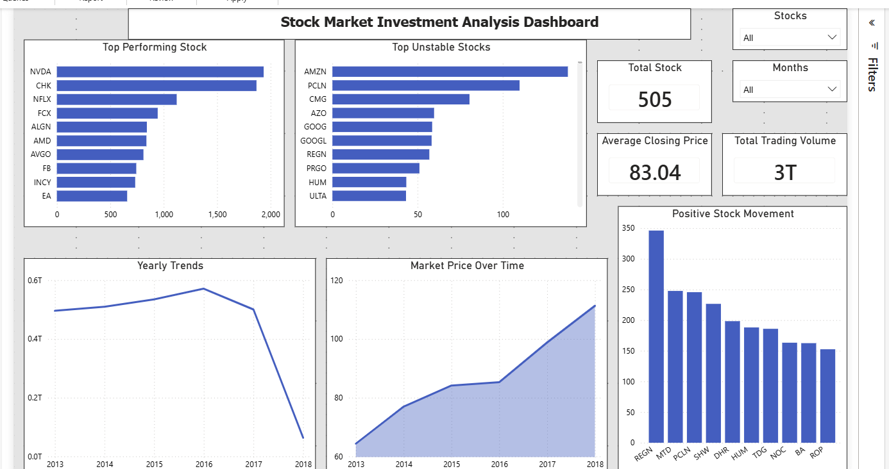

Stock Market Investment Risk Analysis
Documentation
Back To Portfolio
Project Overview
Understanding stock performance, volatility, risk, and trading activity.
This project analyzed stock market performance, volatility, and investment risk to support data-driven investment decisions.
Goal
I analyze stock market performance, volatility, and investment risk
to support better investment decisions.
Process
- I used PostgreSQL to analyze stock market performance, price movement, and trading activity.
- I evaluated volatility levels across different stocks to understand investment risk.
- I compared stock performance over time to identify growth trends and market behavior.
- I built an interactive Power BI dashboard to visualize returns, volatility, and risk indicators.
Key Insights
- I identified stocks that generated strong growth but also carried higher volatility.
- I found that some investments delivered more stable returns with lower risk exposure.
- I observed periods of increased market uncertainty that affected overall performance.
- I highlighted stocks that balanced growth potential and risk more effectively.
Dashboard Preview
